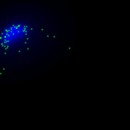

Current version: 0.1.2 Developer(s): Chris Yesson
Accepts categorical maps: no Accepts absence points: no
Author(s): Hirzel, A.H.; Hausser, J.; Chessel, D. & Perrin, N.
Hirzel, A.H.; Hausser, J.; Chessel, D. & Perrin, N. Ecological-niche factor analysis: How to compute habitat-suitability maps without absence data? Ecology, 2002, 83, 2027-2036 Hirzel, A.H & Arlettaz, R. Modeling habitat suitability for complex species distributions by environmental distance geometric mean Environmental Management, 2003, 32, 614-623
Ecological-Niche Factor Analysis (Hirzel et al, 2002) uses a modified principal components analysis to develop a model based on presence only data. The observed environment is compared to the background data of the study area (note that absence points in the occurrence file are treated as background data). The analysis produces factors similar to a PCA. The first factor is termed the 'marginality' of the species, marginality is defined as the ecological distance between the species optimum and the mean habitat within the background data. Other factors are termed the 'specialization', and are defined as the ratio of the ecological variance in mean habitat to that observed for the target species. Model projection uses the geomeans method of Hirzel & Arlettaz (2003)
Parameters (6):
Data type: Integer Domain: [10, oo) Typical value: 10000
Meaning: The ENFA algorithm compares the species presence data with the background environment. This requires the calculation of the mean, standard deviation and covariances of each environmental layer. This could be prohibitively slow and expensive for large datasets, so estimate these values by randomly sampling X points from the background data.
Data type: Integer Domain: [1, oo) Typical value: 5
Meaning: The algorithm requires the inversion of several matrices, but sometimes the matrix to invert is singular and so the algorithm fails. This seems to occur when the background data is undersampled or not representative. Often retrying the model generation (i.e. resampling the background data) makes this problem go away.
Data type: Integer Domain: 0, Typical value: 2
Meaning:
0 - Retain a fixed number of components defined by the variable RETAIN_COMPONENTS
1 - Retain the top N components that cumulatively explain the level of variation defined by the RETAIN_VARIATION variable
2 - Compare the observed explanation of variation to the broken stick distribution retaining those components explaining higher levels of variation
Data type: Integer Domain: [1, oo) Typical value: 2
Meaning: If the Discard_method=0, then this variable is used to determine the number of components to retain.
Data type: Integer Domain: 0.5, Typical value: 0.75
Meaning: If the Discard_method=1, then this variable is used to determine the number of components to retain, by taking those components that cumulatively account for at least this much variation.
Data type: Integer Domain: 0, Typical value: 0
The following image shows a sample model in the environmental space (temperature x precipitation) generated with the standard dataset used for tests (Furcata boliviana localities dataset):
|  |
| fig. 1: default parameters |